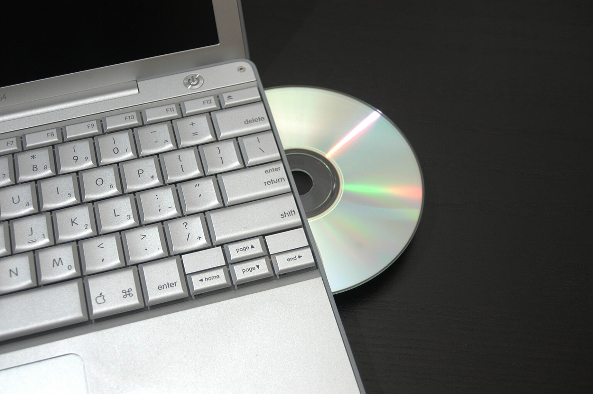

وبلاضافة لما ورد توجد وحدات اخري مثل: -
- وحدة الخزن المساعدة: - حيث يمكن خزن البيانات علي وسائط مساعدة للتخزين وتتمثل في: -
- القرص الصلب Hard Disc : -

يتم فيه خزن أنظمة التشغيل والبرامج التطبيقية ولغات البرمجة والملفات (المستندات) التي ينشئها المستخدم مثل ملفات الطباعة او الرسوم.
2. القرص المرن Floppy Disc.
وهو عبارة عن وسيط تخزين صغير السعة 1.44 ميجا بايت ويستخدم في خزن الملفات الصغير كملفات الطباعة (نصوص)وهذا النوع قد تم الاستغناء عنه وحل محله القرص القابل للازالة او (Flash Memory).

3. أقراص الليزر CD-ROM :-
ويتم التخزين فيه لمرة واحدة وسعتة حوالي 700 ميجا بايت.
4. القرص القابل للازالة Flash memory: -
هذا القرص ظهر مؤخرا ويمتاذ بسعة تخزين عالية وسهولة في الاستخدام وعلي قدرة الكتابة اكثر من مرة (اي انه يمكن حذف محتوياته واستبدالها بمحتويات جديدة) بمعني انه يحمل مواصفات القرص المرن واقراص الليزر.